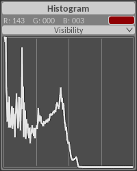

Introduction¶
ImageFloat is a program for image processing. The main idea behind it is the creation of a processing pipeline in the form of a directed acyclic graph, which describes the processing steps performed from the initial input image to the final output image. This provides great flexibility in the processing pipelines and allows for a non-linear processing flow.

Each node in the graph represents an image processing operation with specified inputs and outputs. In addition, nodes can have multiple parameters to tune their behavior. These nodes are the building blocks of the pipeline, ranging from simple math operations to advanced multi-scale processes. When arranged in a graph, these operations are executed to obtain the final output image.
Within the editor nodes can be easily placed, connections between nodes created or removed, and parameters of nodes adjusted. With any change, the pipeline is updated, executed and the output is previewed. This allows for easy tuning across the whole pipeline and, depending on the complexity, real-time feedback on the adjustments made.
User Interface¶
Menu Bar¶

The menu bar contains the following commands:
File¶
| Load Image: | Loads a new input image |
|---|---|
| Save Image: | Saves the processed output image |
Process¶
| New Process: | Creates new processing pipeline |
|---|---|
| Load Process: | Loads an existing processing pipeline from file |
| Save Process: | Saves the current processing pipeline to file |
| Append Process: | Appends a processing pipeline from file to the currently open pipeline |
Settings¶
| OpenCL Device: | Select the OpenCL device that will be used for processing. Setting is applied at the next startup. |
|---|---|
| Continuous: | Continuously execute pipeline independent of changes. Not recommended for normal use. |
Help¶
| Documentation: | Open this documentation. |
|---|---|
| About: | Displays license information. |
Toolbox¶

The toolbox offers the following functionality:
| Move Image: | When this tool is selected, the image can be dragged with the left mouse button when zoomed in. |
|---|---|
| Color Picker: | This tool allows color sampling from the output image with a left mouse click. |
| Auto-connect: | With this option is enabled, when placing and removing nodes the connections are automatically adjusted to accommodate for the changes. |
| Add Node: | This drop-down menu is used to place new nodes. Right-clicking on the image preview shows the same menu. |
Image Panel¶
The image panel Contains a preview of the currently processed output. It is the main area in which nodes can be positioned, however nodes can be moved outside of it across the whole window. Right-clicking on the image or the surrounding dark-gray area brings up the Add Node menu.
Image Information Panel¶

The Image Information panel displays the properties of the currently selected input image.
Histogram Panel¶
The Histogram panel shows a histogram of the output image values. The Visibility drop-down provides a selection of channels to display in the histogram:
| Red: | The sRGB red channel. |
|---|---|
| Green: | The sRGB green channel. |
| Blue: | The sRGB blue channel. |
| Lightness: | The Lab lightness channel. |
The Color Picker selection is shown above the histogram, together with the corresponding sRGB values. These values are also indicated with vertical lines in the histogram.
Status Bar¶
The status bar at the bottom of the windows shows information about the program and the current pipeline.
| UI: | Redraw frequency of the user interface. |
|---|---|
| Processing: | Time elapsed while processing the full pipeline, followed by an indication of the processing device. |
| Memory used: | Amount of memory allocated in image buffers, together with the number of large buffers. |
Processing Pipelines¶
The main component of the user interface is the creation of processing pipelines, this is done in the Image panel. There are several elements that together define the process. Nodes are the basic processing blocks, containing parameters. Links connect the nodes and indicate the flow of data. Together the connected nodes form a graph which specifies the full processing pipeline to be executed.
Nodes¶

A pipeline consists of nodes, at the very least one output node which determines the output of the pipeline. In this application, the input node has a special status too. Together with the output node they are always present in a process, and are used to define the input image to be processed and the output containing the processed image. In addition to these, there are a multitude of nodes, which can be added to the process.
| Adding nodes: | New nodes are accessed through the Add Node menu, subdivided in multiple categories. For further information about the available nodes and their functionality, see the Modules section. |
|---|---|
| Moving nodes: | Once a node is added, it can be moved around by dragging the node title with the left mouse button. |
| Removing nodes: | A node is removed by right-clicking the node title. |
The blue line above the node title indicates that this node is active: it is included in the processing pipeline. If a node is disconnected or otherwise does not contribute to the output, this line will be gray.
Nodes contain parameters which adjust the node functionality, and ports which represent the node’s inputs and outputs.
Parameters¶
A node’s parameters are always shown within the node and can be manipulated at any time. These parameters can have different forms:
| Value slider: | These represent a floating point value in a pre-defined range. Dragging the slider left or right changes its value. Holding Ctrl while dragging enables stepped mode, in which the adjusted value is rounded to fixed increments. Holding Shift while dragging enables precise mode, in which the slider moves in smaller increments for accurate fine-tuning. These effects can be combined. Lastly, right-clicking on a value resets it to its default value. |
|---|---|
| Check-box: | These toggle a parameter on or off, indicated by a filled or empty box. Right-clicking on a value resets it to its default value. |
Note
Some check-boxes enable specific tools, such as a color picker. Such tools can be exclusively enabled, when enabling one tool, all others will be disabled. The check-boxes belonging to the same exclusive group will be momentarily highlighted when one of them is toggled.
Whenever a parameter is changed, the processing pipeline will be updated and output processed to represent the changed parameters.
Often, parameters will allow to be driven by data from another node, this is indicated by Ports next to the parameter. When a parameter’s input port is connected, the manually entered value will be overridden by the value supplied via the port.
Note
A useful feature is driving a parameter with an array input (e.g. mask or image). The parameter will spatially vary according to the input data, allowing for local effects.
Ports¶
Ports reside on the left and right edge of nodes. These are the inputs to (left) and outputs of (right) the node’s processing function. Each input port can be connected to an output port of a different node using links, or left disconnected. When connected, the output of the output node will be transferred to the input of the input node, facilitating data flow between the processing functions. A disconnected port will use a default value.
Ports can accept and generate data of varying size. In general, the data will be image data containing a 2D array of values across three channels. However, a port can also contain a single value, a single three-channel color, or a single channel 2D mask. These can be used interchangeably, the process will use the smallest possible data size while preserving its full content. When different data sizes are used, the process transparently converts the smaller data to fit the larger data.
Links¶
Links connect nodes, specifically, links connect output ports (right edge of node) to input ports (left edge of node).
| Creating links: | Dragging from an output port creates a link, releasing the dragged link over an input port creates the link connection. An output port can have multiple outgoing links. An input port can have only one link, if a previous link exists it will be first removed before creating the new connection. |
|---|---|
| Removing links: | Links can be removed by right-clicking on the port. Right-clicking an output port will remove all outgoing links. |
| Rewiring links: | Dragging from an input port with a connected link will disconnect the link from the input port, and allows to connect the link to a different input port by releasing the link end over that port. If the link is not released over an input port, the link will be removed. |
The Auto-connect option will automatically connect newly placed nodes by splicing them into the link where they are placed. When nodes are removed, the links going through them will be patched to preserve the data flow across the removed node. This functionality is enabled only for the main ports (left/right of the title).
Processing Pipeline Execution¶
The combination of nodes and links describes a graph. This graph represents the processing pipeline as it will be executed. The graph is manipulated by adding or removing nodes, or changing the links between them.
Note
A strictly acyclic graph is not able to represent iteration or recursion. However, the current implementation does not enforce this and cyclic graphs can be created and run in Continuous mode. While this is not advised, a converging loop could be useful in specific circumstances.